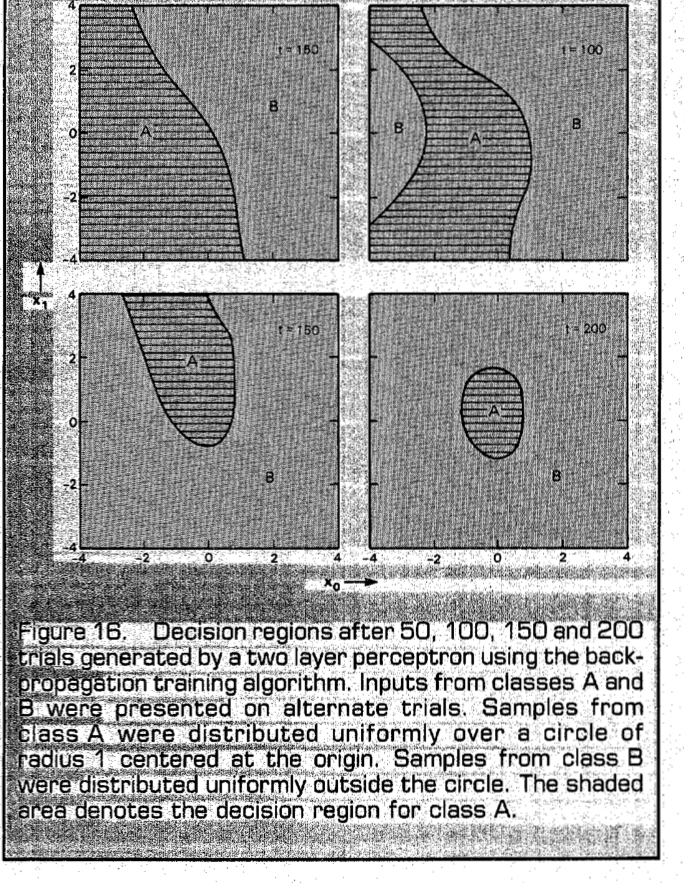

从单个线性单元，走到能学习表示的网络
一条直线分不开 XOR。增加几个神经元后，我们能手工拼出答案；但怎样让网络自己学会这些内部步骤？
本周沿着这个问题前进：先用 Adaptive linear element（自适应线性单元，ADALINE）学会“根据误差改变权重”，再用 Multilayer perceptron（多层感知机，MLP）突破单一线性边界，最后用 Backpropagation（反向传播，BP）把最终损失对每一层参数的影响算出来。末尾再回答：模型能表示某个函数，为什么仍可能训练不好，或在新数据上表现不好？
- 区分 ADALINE 的连续输出、分类标签和训练损失，复算一次 LMS 更新。
- 解释权重空间分区与 Boolean function 数量之间的关系，并说清计数条件。
- 构造三计算单元和带跨层连接的两计算单元 XOR，画出相应决策区域。
- 逐项计算小型 MLP 的前向输出、损失、各层梯度、偏置梯度及一次更新。
- 区分表示存在性、优化成功与泛化能力，解释 momentum 和过拟合。
不需要前几周教材；下面会补齐必要基础。建议分三次学习：先读第1–3章并完成 ADALINE 计算，再读第4–7章并手算 BP，最后读第8–9章并完成迁移练习。窄屏阅读时，长公式与宽图可在各自区域内横向滚动。公式中的数值默认是无物理单位的实数；若输入代表温度等物理量，权重和学习率须与其量纲及缩放相配合。
范围：主课件 PDF 实际页序83–114，从 ADALINE 到 Overfitting Problem。全文页码均从 PDF 第一页起计数。第115页及之后不纳入。评级表示当前学习依赖：5/5 核心基础、4/5 重要方法、3/5 理解支撑、2/5 局部拓展、1/5 背景补充；不表示考试概率。正文标注“前置补充”“教学补充”“经核实的纠正”以区分来源性质。
1 必要前置：把“改一点会怎样”说清楚
1.1 Linear separability（线性可分性）与 Bias（偏置）
先回顾一个 Perceptron（感知机）怎样作决定。输入是 个特征组成的列向量 ，权重 表示各特征的影响，偏置 整体移动判定门槛。先计算一个实数分数，再用 Hard limiter（硬限幅器）输出类别：
是单个单元的 Pre-activation（激活前加权输入）， 是本教材统一使用的阈值函数。 表示转置：一行权重乘一列输入，结果是标量。若原图在圆圈内写阈值 ，它表示“加权和至少达到 ”；因此 ，圆圈中的数不是偏置。双极性标签可改为 ，判定边界不变。
在二维输入中， 是一条直线；更高维叫 Hyperplane（超平面）。若一条这样的边界能把两类全部分到正确两侧，数据就线性可分。这里说的是原输入特征下的边界，不是训练次数是否足够。
Exclusive OR（异或，XOR）要求 00、11 输出0，01、10 输出1。假设存在上述单元，则四行真值表分别要求：
中间两式相加，得到 ，所以 。这与最后一式要求它小于0冲突。不是没找到好权重，而是这种结构里根本没有满足四行的权重。
前置回顾与教学推导；对应 Lecture_slides_full semester.pdf，PDF实际页序：88–92、course_files_export/TLU.pdf，PDF实际页序：6–8。TLU 第6页对 XNOR 给出同类反证。
1.2 Squared error（平方误差）、Partial derivative（偏导数）与 Gradient descent（梯度下降）
分类标签只告诉我们“对或错”，连续输出还能告诉我们“离目标差多少”。令目标为 ，连续预测为 ，残差定义为 。本周统一采用单样本半平方误差：
平方让正负误差都受惩罚；误差翻倍，损失变成四倍。前面的 不改变最小值的位置，只让求导时平方带来的2消掉。例如目标1、预测0.6，则误差0.4、损失0.08。损失不是分类错误率，也不能直接读成“8% 错误”。
前置补充。导数是局部变化率：预测增加一个很小的量，损失大约改变多少？把目标 视为常数，有 。对有许多参数的函数，偏导数 表示只改变第 个参数、其余参数固定时的变化率。例如：
先把括号记为 。增加 会使 等量增加，增加 会使 增加两倍，因此三个偏导分别为 。这已经是后面链式法则的一个实例。
把所有偏导按参数顺序排成列向量，就是 Gradient（梯度）。用 统一表示全部 个可训练参数，则：
是 Learning rate（学习率），控制每次走多远。局部近似为 ；选 ，就得到 。范数平方是各分量平方之和。这解释了负号：顺着负梯度，小步移动会降低损失；“局部近似”也解释了为什么步长太大可能越过低点，反而升高损失。
令 ，起点 ，梯度为 ，损失为2。若 ，新权重 ，新损失1.62；若 ，新权重7，新损失8。相同下降方向，因为步长不同，结果可以相反。
前置补充及教学示例；损失与下降思想对应 Lecture_slides_full semester.pdf，PDF实际页序：85、105、course_files_export/Nature1986.pdf，PDF实际页序：2–3。
1.3 Chain rule（链式法则）：沿路径相乘，遇分支相加
假设参数 先改变 ， 再改变 ，最后改变 。若这条路径上的函数在当前点可微，三个局部变化率相乘就是总变化率：
每个分数都在回答一个具体问题：输出变一点使损失变多少？加权输入变一点使输出变多少？权重变一点使加权输入变多少？例如 、、，三个因子依次为 、1、，所以梯度为 。这将直接产生 ADALINE 的规则。
如果一个隐藏输出 同时影响两个下游单元的输入 ，它改变损失的两条路径都必须计入：
右边各项是标量。比如两条路径的贡献分别是0.3和−0.1，总影响就是0.2，而不是选较大的0.3。BP 的核心就是重复使用这两条规则：路径内相乘，所有下游路径相加。
若 、、，在 时， 与 各是多少？
展开讲解答案
先算 。然后乘局部导数：，所以权重梯度为−2；，偏置梯度为−1。二者为负，梯度下降会增加它们，使预测向目标1靠近。
前置补充；对应 Lecture_slides_full semester.pdf，PDF实际页序：106–108、course_files_export/Nature1986.pdf，PDF实际页序：2–3，式(4)–(7)。
现在我们已具备“定义误差—求导—更新”的工具。先在只有一个线性单元时完整走通，之后增加隐藏层就不会失去方向。
2 ADALINE：先学习连续分数，再作类别判定
2.1 Linear output（线性输出）与 Perceptron 的区别
ADALINE 由 Widrow 与 Hoff 在1960年代初提出，使用与感知机相似的加权求和结构，但训练时使用阈值之前的连续输出。本节取线性增益为1：
， 都是标量。用于双极性分类时，最终标签 在 时取+1，否则取−1。训练损失里的 不能换成 。Tutorial 把线性分数写作 、目标写作 ；主课件把目标写作 。教材统一目标为 ，预测为 ，避免同一个字母承担相反角色。
| 比较点 | Perceptron | ADALINE |
|---|---|---|
| 训练时使用的输出 | 经过硬阈值的类别 | 阈值前的线性分数 |
| 更新依据 | 常见规则根据错分样本修正 | 线性输出与目标之间的数值残差 |
| 已分类正确还会更新吗？ | 常见错分更新规则不会 | 会，除非残差为0（或对应输入为0使该权重梯度为0） |
| 目标性质 | 寻找正确分隔；线性可分时经典规则有收敛结论 | 降低平方误差；这不等于最小化分类错误数 |
| 原输入上的边界 | 一个超平面 | 线性分数阈值化后仍是一个超平面 |
例如目标+1，预测0.2时已经判对类别，但 ADALINE 仍看到误差0.8，要继续更新。反过来，预测2时也判对类别，误差却是−1，要把分数压回1。因此 LMS 关心数值拟合，不能把“平方误差下降”直接替换为“分类一定更好”。
TLU 第19页主要从 −1/+1 编码介绍 ADALINE，并在阈值逻辑讨论中简化了 delta rule 的命名。本教材采用主课件与 Tutorial 更明确的算法定义：线性输出上的平方误差学习。双极性编码本身不是 ADALINE 的充分定义，也不能把感知机的线性可分收敛保证移植给平方误差分类。
主课件第87页说感知机不是 gradient descent，宜理解为：它不是对硬阈值输出的平方误差直接作普通可微梯度下降。不能从该句推出感知机规则绝不可能有其他损失解释；本周不展开那些解释。
原资料与定义协调：Lecture_slides_full semester.pdf，PDF实际页序：83–87、course_files_export/Tutorials/Perceptron_Adaline.pdf，PDF实际页序：14–15、course_files_export/TLU.pdf，PDF实际页序：19，§3.6。
2.2 Least mean squares（最小均方，LMS）与 Delta rule（Delta学习规则）
把上一章链式法则用于 ADALINE。对第 个权重求导，改变它只会通过线性分数影响损失：
这里 ，每个偏导是一个标量。将负梯度代入更新式，两个负号相消：
这是一个样本的 LMS 更新。它解释了三个常见现象：误差越大，调整通常越大；输入为0时，该样本对对应权重的梯度为0；输入为负时，权重变化的方向会反转。偏置相当于连接到恒为1的输入，所以没有额外的 因子。若使用阈值 ，对应更新就是 。
主课件第84页允许 ， 是固定线性增益。此时导数还应乘 ，更新为 。课件式子的简写可以在取 ，或将固定因子吸收进学习率后使用；教材数值例题均取1。若损失省略 ，导数还会多一个2；比较公式时必须同时核对损失定义与学习率。
原资料及逐步推导：Lecture_slides_full semester.pdf，PDF实际页序：84–85、course_files_export/Tutorials/Perceptron_Adaline.pdf，PDF实际页序：15。线性增益与常数因子说明为经代数核验的教学补充。
2.3 Online learning（在线学习）与 Batch learning（批量学习）
设训练集有 个样本 ，上标 是样本编号，不是幂。整套训练集的平均损失为：
Online / sequential（在线／逐样本）每读一个样本就更新一次，下一样本使用新权重。顺序可以固定，也可以每轮打乱；随机抽样版本常称 Stochastic gradient descent（随机梯度下降，SGD）。一次看完所有样本叫 Epoch（训练轮次）。
Batch（整批）则把参数固定，先计算全部样本的梯度，再统一更新：
前一个和是 维向量，后一个和是标量。这里平均损失带 ；主课件第84–85页使用求和形式，若目标函数取 ，就去掉 。同一数值学习率下，两种缩放的步长不同。Mini-batch（小批量）是教学补充：每次取 个样本平均梯度，其中 。
只训练偏置：，初值0，两个目标依次为1和2，。Online 先得到 ，再得到 。Batch 若用总损失，两个残差都在旧偏置0处计算，结果是 ；若用平均损失则得到0.15。
0.29与0.3的差别来自第二个残差是在不同参数处计算；0.3与0.15的差别来自求和与平均。不能把它们混为一个“算法对错”问题。
主课件第86–87页的“batch only”不能作为 ADALINE/LMS 的一般限制。第84页展示的是 batch 版本；Tutorial 第15–16页给出可直接推导的逐样本版本。两者都是有效的平方误差梯度更新。对 BP，Nature 第3页也明确区分逐样本更新与累积全体梯度后更新。固定步长 online 可能在最优点附近波动，不能一概承诺每轮总损失单调下降或精确收敛。
Lecture_slides_full semester.pdf，PDF实际页序：84–87、course_files_export/Tutorials/Perceptron_Adaline.pdf，PDF实际页序：15–16、course_files_export/Nature1986.pdf，PDF实际页序：3。Mini-batch 与两样本比较为教学补充。
2.4 复算 Tutorial：从 −0.1 更新到 0.56
已知 、、，初始 、。使用当前样本作一次 online 更新。
第一步：先前向计算，得到残差
分类标签为−1，确实错了；但是更新使用1.1这个连续残差，不使用类别差2。更新前 。
第二步：所有参数使用同一个旧残差
撇号表示更新后参数。不能改完 就重新算一次残差再改 ，那会变成另一种更新过程。
第三步：用全部新参数检查结果
这次既把类别改对了，又使该样本的损失下降。但0.56还没达到目标1，所以之后再遇到该样本仍会更新。这一个样本的改善不能保证其他样本同时改善。
第15页将损失写成完整平方，第16页的0.605和0.0968却是半平方；第15页给出的更新也与半平方配套。本教材统一用半平方，完整复现第16页数值。若坚持完整平方，损失应为1.21和0.1936，梯度也翻倍；要保留同一更新幅度，学习率需减半。
保持题目其他条件不变，将学习率改为0.05。计算新权重、偏置、分数与损失。
展开讲解答案
旧残差仍是1.1。三个增量为0.055、0.11、0.055，所以 、。新分数 ，新残差0.77，新损失 。步子较小，这一次下降较少；这不说明所有问题都应该增加学习率。
course_files_export/Tutorials/Perceptron_Adaline.pdf，PDF实际页序：15–16。已按原图逐项复算；近迁移练习为教学补充。
ADALINE 让训练规则可微且可计算，但它的分类边界仍只有一个超平面。下一章解释：为何单层限制会随着输入数量增加而越来越突出。
3 权重空间：有多少种分类能被单层表示？
3.1 Weight space（权重空间）与 Input space（输入空间）
在输入空间里，我们固定权重、移动样本：直线把样本分成两类。现在换一个视角，固定训练样本，移动权重。把偏置并入参数，令：
两者都是 维列向量。固定第 个样本后，方程 是权重空间的一张超平面，未知量是参数 。它经过权重空间原点，并把“该样本预测为正”和“该样本预测为负”的参数分开。一个样本贡献一张平面；许多样本共同把权重空间切成区域。
只要参数在同一开区域内移动而不穿越边界，所有样本的符号都不变，因而预测标签向量不变。想找一个指定标签向量的解，就是看对应符号条件的交集是否为空。可能有无穷多组权重实现同一种分类，却完全没有权重实现另一种分类。
上图用一个输入特征说明坐标转换：固定样本 得到参数平面中的直线 ，固定样本 得到 。图中两条线把二维参数空间分成四区；例如上方区域对两个样本都给正分数。这里的横轴是权重 ，不是输入 。
原资料：Lecture_slides_full semester.pdf，PDF实际页序：88–89、92；偏置增广与二维示意为教学补充。
3.2 Hyperplane arrangement（超平面排列）的计数条件
课件第88页列出1、2、3、4张平面最多切出2、4、8、14区。这可以放在三维权重空间、所有平面过原点的情境中理解。第89页对应的标准结果是：
是平面数， 是权重空间维数， 是最大开区域数。 表示从 个对象中选 个的组合数， 时取0。等号要求这些过原点的平面处于 General position（一般位置）：它们的法向量任意不超过 个都线性独立，避免重合或额外退化；不满足时只能作为上界。这里不计边界上的零分数为新的二分类区域。
在 时，。代入 得 。几何上，第4张平面被已有3张平面截成3条过原点的线；在新平面自身的二维空间里，这3条线最多切出6区，于是新增6个三维区域，。这也给出递推关系：
第一项是旧区域，第二项是新平面自身被切出的区域数。这一解释比死记数字更有用。
任意位置的仿射平面并不使用同一个式子。一般位置下，三维中的4张不要求共过原点的平面最多能切出15区。课件第89页的等式适用于中心排列；其末尾严格不等式也不能不加条件地照用，例如 时，，而 。本文采用已核对的精确式与上界含义，不采用该无条件不等式。
对固定 ，主导项来自 ，当 增大时，最大区域数约按 增长。这个“固定维数”的条件很关键，不能一边增加输入维数，一边仍说它是某个固定次数的多项式。
Lecture_slides_full semester.pdf，PDF实际页序：88–89；外部核验：Cover (1965)，PDF实际第1–3页，Theorems 1–2 与递推证明。例子及反例为教学推导。
3.3 Boolean function（布尔函数）与 Threshold function（阈值函数）
个二进制输入共有 种输入组合。一个布尔函数就是给每行真值表指定0或1；每一行独立有两种选择，所以布尔函数总数为：
是函数数目，而不是样本数。阈值函数只是这些函数中能由一个带偏置的线性阈值单元实现的子集，记其数量为 。包括不依赖某些输入的函数，也包括恒0、恒1。由于增广后权重空间维数为 ，可使用：
布尔立方体顶点通常不满足一般位置条件，因此这个最大分区数不一定达到。原课件的 在分区公式与布尔输入讨论间容易混淆；这里用 表示输入数，用 表示包含偏置后的参数维数。
| 输入数 d | 全部 Bd | 阈值 Td | R(2d, d+1) |
|---|---|---|---|
| 1 | 4 | 4 | 4 |
| 2 | 16 | 14 | 14 |
| 3 | 256 | 104 | 128 |
| 4 | 65,536 | 1,882 | 3,882 |
| 5 | 4,294,967,296 | 94,572 | 412,736 |
从2个输入到3个输入，全部函数由16增到256，而可由单阈值单元表示的函数只有104。关键不是背下表格，而是理解：更多训练轮次只能在既定结构的参数空间内寻找，不能凭空创造不存在的分类区域。
原资料：Lecture_slides_full semester.pdf，PDF实际页序：90–92。经核实的纠正：TLU第6页把四输入数列为1,774，与主课件的1,882冲突；本表采用 Muroga、Tsuboi、Baugh (1970)，PDF实际第4页 Table I 的1,882。课件第91页的数量级表述不作精确计数公式，以上界式替代。
3个二进制输入只有8行真值表，为什么有256个布尔函数？若某算法训练很久仍不能把 XOR 分对，可以仅据此判定学习率太小吗？
展开讲解答案
每行的输出有2种独立选择，故函数数为 ，不能把输入组合数8当成函数数。对单阈值结构，XOR 根本不在可表示集合中，改学习率无法修复结构限制；对足够的 MLP，才需要进一步检查优化、实现或数据。
表示空间太小，就要改变网络结构。增加隐藏单元的目的，是先把原输入变成一套更容易分类的新特征。
4 MLP 与 XOR：隐藏层如何改变表示
4.1 Feedforward network（前馈网络）与 Hidden layer（隐藏层）
前馈网络中的信息沿有向连接向输出传播，不绕回先前节点。Input layer（输入层）提供特征，Hidden layer（隐藏层）计算中间表示，Output layer（输出层）产生预测。隐藏的含义是：训练资料通常没有直接给出这些单元的目标值，不是说它们的值不能被观察。
例如输入2维、隐藏层2个单元、输出1个单元，称为2–2–1网络。这里有两层可训练计算；若把只传值的输入层也画成一层，则图中有三层。因此主课件第95页图注的 three-layer 与常说的“两层感知机”可以指同一个结构。讨论深度时要先说是否计入输入层。
每条线都带一个权重，每个计算单元通常还有偏置。箭头方向表示前向计算依赖，BP 反向传的是导数，并不把这个网络变成循环网络。标准逐层全连接网络只连接相邻层；稍后还会看到合法的跨层前馈连接。
为什么不能把多个 ADALINE 简单叠起来就解决 XOR？假如每层都是线性的，第一层 ，第二层 ，则：
若 、、，则 为 ， 为 ，合成权重 为 。整个网络仍是一次仿射变换；最后加阈值还是线性边界。隐藏层的非线性才使层叠具有新的表示能力。
Lecture_slides_full semester.pdf，PDF实际页序：93–94、course_files_export/ASSPM-Lippmann1987.pdf，PDF实际页序：12–13，Multi-Layer Perceptron及Fig.15；线性合成推导为教学补充。
4.2 三计算单元 XOR：先检测两种“不同”，再合并
主课件第95页与 Perceptron_Adaline 第13页使用同一种构造。第一个隐藏单元识别“第一个输入为1、第二个为0”，第二个识别相反情形，输出单元把两者作 OR（或）：
，； 沿用第1章“等于0时输出1”的定义。三个0.5是阈值，对应偏置−0.5。两个隐藏单元的权重分别为 、，输出权重为 。
| x₁x₂ | x₁−x₂−0.5 | x₂−x₁−0.5 | (h₁,h₂) | h₁+h₂−0.5 | y |
|---|---|---|---|---|---|
| 00 | −0.5 | −0.5 | (0,0) | −0.5 | 0 |
| 01 | −1.5 | 0.5 | (0,1) | 0.5 | 1 |
| 10 | 0.5 | −1.5 | (1,0) | 0.5 | 1 |
| 11 | −0.5 | −0.5 | (0,0) | −0.5 | 0 |
原来位于对角线两端的负类00、11，都被映射到隐藏空间中的同一点(0,0)；正类变成(0,1)、(1,0)。在这个新空间里， 就可以分开两类。隐藏层不是直接把一条直线“弯曲”，而是先改坐标表示，再让输出层做简单决策。
将输入暂时扩展到连续二维平面，可以看出这个网络学到什么形状： 对应 ， 对应 。最终正类是两个半平面的并集，中间斜带是负类。这正是课件第99–100页的区域 A、B、C：按本教材隐藏顺序，分别编码01、00、10；11不可能，因为两个相反的不等式不能同时成立。
先看上图左侧：四个角点的0/1标签只是 XOR 的真值表；有色区域才是这个具体网络对其他点的延伸。右侧预告另一种正确 XOR 网络。两图在四个角点相同，却在内部某些点不同；例如(0.8,0.4)左图输出0，右图输出1。只由四个角点的训练要求，不能唯一决定整个平面的分类。
原资料网络与区域：Lecture_slides_full semester.pdf，PDF实际页序：95、99–100、course_files_export/Tutorials/Perceptron_Adaline.pdf，PDF实际页序：13；表格及并排决策图为依据原网络公式绘制的教学图。
4.3 Alternative representations（替代表示）：AND/OR 与跨层连接
Tutorial 2 第31页先算 AND（与）和 OR。取 ，它在二进制输入上只会是0、1、2。于是可以写成：
当 时两个隐藏值是00，输出0；当 时为01，输出1；当 时为11，输出0。Tutorial 的原阈值依次为2、1、1，在这几个离散分数上产生完全相同的真值表。更一般地，AND 阈值可取 ，OR 和输出阈值可取 ；阈值不必只有唯一正确数值。
用1.5、0.5、0.5这组阈值扩展到连续输入时，输出为1的区域是 ，即上一图右侧斜带。若改用 Tutorial 的整数阈值，连续区域边界也会改变，尽管四行真值表不变。
第一个单元检测 AND；两个原输入还直接连到输出单元，权重都为1，隐藏输出连到输出单元的权重为−2。逐个检查 ：隐藏值为0、0、1；输出激活前值为−0.5、0.5、−0.5，因此得到0、1、0。省掉一个单元，是因为输出仍能读取原输入。
Tutorial 2 第30页画的是另一种结构：两原输入只进入第一个单元，第二个单元只接收它的一个二值输出，没有旁路。第二个单元只可能把这个位保留、取反或变成常数；保留或取反仍是一个半空间的划分，因此不能形成 XOR。这和课件第98页的两单元解没有矛盾，连接图不同。
课件第96页用不同逻辑函数编号展示16种三计算单元方案，说明内部表示具有多样性；这个枚举不等于只有16组实数权重，也不要求记住没有语境的函数编号。交换隐藏单元顺序、在不改变真值表的范围内移动阈值，都可能产生其他参数实现。
在两单元跨层网络中，如果把隐藏单元到输出的权重从−2改为0，会发生什么？
展开讲解答案
输出变成 ，即 OR。00仍为0，01、10仍为1，但11也变成1。−2这条连接的作用正是在两个输入都为1时取消其“总和过大”的影响。
Lecture_slides_full semester.pdf，PDF实际页序：96、98、course_files_export/Tutorials/Tutorial 2- M-P neuron.pdf，PDF实际页序：30–32。阈值区间及无旁路不可能性论证为教学补充。
4.4 Parity（奇偶性）与 XNOR（同或）
三个输入的 Odd parity（奇校验）在1的个数为奇数时输出1。先算前两个的奇偶性，再与第三个作 XOR：
是 XOR 运算符， 都是二值标量。输入000、011、101、110含偶数个1，输出0；001、010、100、111含奇数个1，输出1。例如111先得到 ，再算 。Tutorial 第34页的每个“XOR”圆圈是一个功能模块，不能把它当成一个普通阈值单元；将每个模块用上节的三计算单元网络展开，就是6个计算单元的一种有效实现，不宣称它最省单元。
Exclusive NOR（同或，XNOR）是两输入 XOR 的取反，00、11输出1，01、10输出0。可以在 XOR 后加一个 NOT 单元；也可以保留第4.2节的两个隐藏单元，直接改变输出逻辑：
相同输入使 ，输出1；不同输入使和为1，输出0。因此仍只需三个计算单元。Tutorial 第35页文字说接 NOR，但图画 NOT；这里使用明确的取反逻辑，若用 NOR 门实现 NOT，须把其两个输入并接同一个 XOR 输出。
course_files_export/Tutorials/Tutorial 2- M-P neuron.pdf，PDF实际页序：33–35；parity展开与XNOR公式为对原题的教学解答。
4.5 Boolean network construction（布尔网络构造）
TLU 第7–8页还展示“两个 implication（蕴含）取 AND”的 XNOR：先把输入映射到隐藏坐标，再在隐藏空间分隔，思想与 XOR 一致。更一般地，对每一行输出1的真值表，可以建一个专门检测那一行的隐藏单元，最后把它们 OR 起来。这是 Disjunctive normal form（析取范式，DNF）的网络构造。
目标二进制行是 ，其中有 个1。取 （当 ），否则 ，阈值取 。在目标行处，加权和为 ；任何一位不匹配，和至少减少2，至多变成 ，因此只有目标行过阈值。
TLU 的写法是 。因为 ，两种阈值写法相同。若一共有 个正例行，最后用 合并即可；恒0函数可直接用恒0输出。这个存在性构造可能需要大量隐藏单元，也没有给出从少量样本学出规则的保证。
从连续几何看，半空间的 AND 可形成凸多边形或多面体，若再对多个这样的区域作 OR，就能组合不连通区域。Lippmann 第13页的凸区域讨论使用特定的 AND 构造，不能读成“所有只有一层隐藏层的网络只能产生凸区域”：第4.2节的 XOR 两半平面并集已经提供反例。有限硬阈值网络产生有限多面体组合；遇到一般曲线边界，通常谈精度有限的逼近，而非有限条直线精确复制任意曲线。
course_files_export/Tutorials/Tutorial 2- M-P neuron.pdf，PDF实际页序：33–35、course_files_export/TLU.pdf，PDF实际页序：6–9，§3.4、course_files_export/ASSPM-Lippmann1987.pdf，PDF实际页序：13。角点检测公式展开、网络展开数量与几何限制为教学说明。
我们会手工给隐藏层分工了。但真实任务一般不告诉我们应该检测 AND、差值还是其他特征。学习规则必须根据最终损失，为隐藏单元分配调整方向。
5 从手工逻辑转向可微网络
5.1 Credit assignment（贡献分配）：隐藏层没有答案怎么办？
监督训练资料给出输入 与最终目标 ，通常不会附上“隐藏单元1应该输出0.8，隐藏单元2应该输出0.1”。即使对于 XOR，上一章已经找到多种隐藏表示；强行替隐藏层指定一套目标，会把它锁定为我们预先设计的功能。
BP 的方法是换一个问题：不问“隐藏值应该等于多少”，而问“这个隐藏值增加一点，最终损失会上升还是下降，上升或下降多少？”输出层的误差可以直接求导，隐藏层通过下游权重与局部导数接收这个影响。最终标签没有倒流；网络也没有直接看见隐藏层的正确答案，反向传递的是对最终损失的敏感度。
硬阈值使这条路不畅：远离阈值时，输入略变而输出不变，导数为0；恰在阈值处发生跳变，普通导数不存在。因此不能对上一章那些硬阈值 XOR 单元直接套用本周的光滑 BP 公式。我们改用可微的激活函数，保留非线性表示能力，同时获得可传播的局部变化率。
course_files_export/TLU.pdf，PDF实际页序：19–20，§3.7、Lecture_slides_full semester.pdf，PDF实际页序：101、course_files_export/Nature1986.pdf，PDF实际页序：1。TLU 对硬阈值训练的历史叙述只用于解释经典可微 BP 的困难，不作为“所有硬阈值网络永远无法训练”的断言。
5.2 Sigmoid（S形函数）与 Hyperbolic tangent（双曲正切）
Logistic sigmoid（逻辑斯谛S形函数）把任意实数 平滑压到0与1之间：
这里 在指数中表示自然常数，不是此前残差；，输出 。 时输出0.5，正值越大越靠近1，负值越小越靠近0。有限输入不会恰好到达0或1。输出虽然在0与1之间，本周的平方误差训练并不自动保证它是经过校准的概率。
求导可分成两步：把外层看成倒数函数，把内层看成 。倒数求导带负号， 求导也带负号，二者相消：
因此前向计算若已存下 ，反向只需 ，不用重新求指数。若带固定斜率 ，即 ，导数需再乘 。第102页的三条曲线展示了这种斜率变化： 越大，中央越陡，越像硬阈值，但两端也更快进入平坦区域。
图中先看零点：logistic 为0.5，而 tanh 为0；再看两端，两者都会变平，局部导数接近0，这叫 Saturation（饱和）。层层连乘许多小导数时，较早层梯度可能非常小，学习变慢。这是由公式可直接看出的局限，不是隐藏层一定没有作用。
标准双曲正切及其导数是：
其输入是实数，输出在 ；若目标编码为−1/+1，它是自然的候选激活。换激活后应使用相应导数，不能继续用 。
原图把 等同于 。按指数定义，这个式子实际等于 ，也等于 。若把它记为 ，则 ；标准 tanh 的导数没有这一个 。例如在0处，前者斜率0.5，后者斜率1，不能混用。
第104页还展示其他平滑压缩曲线与分段线性的压缩函数。这些图的共同目的，是把硬跳变替换成连续响应；并非所有画出来的函数在每一点都可微。分段线性函数在折点处需另作导数约定，本周的逐步推导使用处处可微的 logistic 或 tanh。
Lecture_slides_full semester.pdf，PDF实际页序：102–104、course_files_export/Nature1986.pdf，PDF实际页序：1–2、course_files_export/ASSPM-Lippmann1987.pdf，PDF实际页序：14，Box 6。tanh纠正由指数恒等式直接核实。
5.3 Learned representation（学习得到的表示）：原论文在展示什么？
Nature 1986 的文章 Learning representations by back-propagating errors不只是写出了求导步骤，还展示了隐藏单元能形成任务相关的表示。第2页 Fig.1 的任务是判断6位二进制输入是否关于中心对称。两个隐藏单元对对称位置使用大小近似相等、符号相反的权重；输入对称时成对贡献抵消，隐藏单元的负偏置使其活动较低，输出的正偏置使输出较高。输入不对称时，一个隐藏单元可激活并抑制输出。
同侧权重的大小近似为1:2:4，让不同3位模式形成不同加权和；反号的两套检测器分别发现两个方向的不平衡。这里“开／关”是对 sigmoid 活动高低的直观描述，不应把论文中四舍五入的权重和 sigmoid 输出当成精确布尔门。
第2–3页 Fig.2–4 是两棵结构相同的家谱。网络输入某个人和一种关系，输出相关的人；初始输入以“每个人各占一个位置”的方式编码，隐藏层却可学出与国别、辈分、家族分支有关的分布式活动模式。所谓 Distributed representation（分布式表示），就是一个对象由多个隐藏单元共同编码，而不是始终只激活一个专属单元。论文用104个关系三元组中的100个训练，并报告对余下4个的正确泛化。这个结果说明有用表示可以出现，不是保证任何数据都能泛化。
图中的权重方块用面积表示幅值、黑白区分符号；读图应关注若干单元捕捉了什么共同结构，而不是把某个隐藏单元解释成固定的人类概念。作者也明确指出，当时这套学习过程不是一个可信的脑学习机制模型。
原论文：course_files_export/Nature1986.pdf，PDF实际页序：1–4，Fig.1–4及正文；只采用本篇文章。第3页 Fig.5 的循环网络按时间展开只作选读入口，本教材止于可微前馈网络。
可微激活提供局部斜率，训练目标提供最终误差。接下来用同一套符号把这些量沿网络连接起来。
6 BP 推导：输出层、隐藏层与第一可训练层
6.1 Forward pass（前向传播）：先固定符号和维度
先处理一个样本，暂时省略样本编号。网络有 个可训练层，第 层宽度为 ，输入宽度为 ，输出宽度为 。令 ，逐层计算：
| 符号 | 含义 | 维度 |
|---|---|---|
| W(ℓ) | 从上一层到本层的权重；行是接收单元，列是发送单元 | nℓ × nℓ−1 |
| a(ℓ−1) | 上一层输出列向量 | nℓ−1 × 1 |
| u(ℓ), b(ℓ) | 本层激活前输入、偏置 | nℓ × 1 |
| a(ℓ) | 对 u 的各分量分别应用激活函数 fℓ | nℓ × 1 |
| y=a(r), t | 最终预测、目标 | m × 1 |
单个接收单元 的式子是 。上标括号现在表示层号；若涉及多个样本，会额外写样本索引，不与指数混用。一个样本的多输出损失为：
这是各输出误差相加的标量。前向传播要保存每层 、，因为反向求导需要当时的值。矩阵只是简写；不会矩阵乘法时，也可以始终按单元公式逐项算。
Lecture_slides_full semester.pdf，PDF实际页序：93–94、105、course_files_export/Nature1986.pdf，PDF实际页序：1–2，式(1)–(3)。统一符号和形状为教学补充。
6.2 Output-layer gradient（输出层梯度）：三个局部因子
定义本教材的 Delta（局部误差信号）为激活前输入的损失导数：
这是一个标量导数，不是目标值，也通常不等于残差 。先考虑最后一层： 只通过对应输出 影响这一层的损失项，因此：
若输出层用 logistic，就得到 。再向权重走一步：
为什么权重旁边乘的是“上一层输出”？因为加权输入中，该权重出现在 这一项，其他项对它求导为0。为什么偏置不再乘激活值？因为 。
主课件第106–108页定义 ，所以课件用正号增量 。本教材定义 ，更新是 。两套写法等价；不能把前者的 delta 代入后者的更新符号。
若输出层是线性函数，局部导数就是1，此时 ，权重梯度回到 ADALINE 的 。这说明 BP 是把同一思路扩展到多层，而不是另一个互不相关的规则。
Lecture_slides_full semester.pdf，PDF实际页序：105–106、course_files_export/Nature1986.pdf，PDF实际页序：2，式(4)–(6)；符号对照经原图核验。
6.3 Hidden-layer gradient（隐藏层梯度）：把所有下游贡献加起来
设正在处理第 层隐藏单元 。它的输出 会进入下一层许多单元 ，因此先对这些路径求和：
下一层的加权输入包含 ，所以对应局部导数就是连接权重 。这里是下游单元的 delta 乘通向它的权重，不是乘本层自己的输入权重，也不是把所有 delta 不加权地平均。
接着从隐藏输出走回隐藏加权输入，再乘本单元激活函数的导数：
对 logistic，局部因子是 。一旦获得 delta，权重与偏置的梯度和输出层采用同样的形式：
这就是递推：知道后一层的 delta，就能得到前一层的 delta，再得到前一层参数梯度。不需要枚举从每个权重到输出的每一条完整路径，因为下游公共部分已计算过一次。
一个隐藏单元当前输出0.5，下一层两单元的 delta 为−0.2与0.1，对应连接权重为0.6与−0.4。先求下游贡献：；再乘隐藏斜率0.25，得到 。若这隐藏单元的输入为2，其连接权重梯度为−0.08。只保留一个下游单元，就会漏掉另一条路径。
Lecture_slides_full semester.pdf，PDF实际页序：107、course_files_export/Nature1986.pdf，PDF实际页序：2–3，式(6)–(7)。微例为教学补充。
6.4 First trainable layer（第一可训练层）、矩阵写法与跨层路径
递推到 时，前一层输出就是原输入：。所以：
主课件第108页把这一层称为“Input layer 1”，但式中已经有权重、激活值与 delta，实际处理的是接收原输入的第一可训练层。普通输入节点只是提供数据，不存在要训练的 或输入层激活参数。
将所有单元合起来，标准相邻层网络的 BP 可写成下面三式。 表示同形向量逐元素相乘，而不是点积：
第一式输出 维列向量：转置权重的形状是 ，乘下一层 维 delta。第二式是 Outer product（外积），一列乘一行，得到 矩阵，与原权重完全同形。第三式与偏置形状相同。这些维度是很实用的自查工具。
若存在跨层连接，仍遵循“所有下游路径相加”，只是不能只对紧邻下一层求和。对任意可微前馈单元 ，令 为所有直接接收其输出的单元集合， 为从 到 的权重：
按依赖关系从输出向前计算即可。这个式子适用于光滑的前馈计算图；第4章的硬阈值两单元 XOR 仍不能直接套普通可微 BP，跨层连接本身并不是障碍。
Lecture_slides_full semester.pdf，PDF实际页序：108、course_files_export/Nature1986.pdf，PDF实际页序：1–3，允许跨层连接及反向链式法则。矩阵维度与一般前馈路径式为教学补充。
6.5 Training loop（训练循环）：计算导数与改变参数是两件事
BP 负责计算梯度，Gradient descent 负责使用梯度更新参数。教材里的“BP训练”指两者结合。主课件第97页画出反复“输入样本—计算误差—修改参数”的闭环；其中供学习使用的例子应理解为训练样本，不能因为图上写着 test input-output 就把用于最终评估的测试集拿来调参。
- 初始化。选择小幅随机权重，使同层隐藏单元开始时不完全相同。若连接与初值都对称，它们会收到相同梯度，可能一直学成相同特征。偏置可以取0；需要打破的是隐藏单元之间的对称。
- 前向。使用一套固定的当前参数，保存各层加权输入与激活值，计算损失。
- 反向。先算输出 delta，再按逆序算各隐藏层 delta，最后得到全部参数梯度。
- 汇总。Online 使用当前样本梯度；batch 或 mini-batch 用同一旧参数计算各样本梯度再求和或平均。
- 更新。所有参数按约定的目标函数与学习率统一更新；隐藏 delta 必须使用这次前向时的下游权重。
- 检查与重复。记录训练损失及独立验证表现，设置迭代上限、改善阈值或验证停止条件。不能仅凭一次损失下降就判定完成。
在一个样本内先改输出层权重，再用这些新权重算隐藏 delta，会混合两个参数点，得到的不是同一个损失在同一个点的梯度。计算顺序可以优化，但这项数学要求不能改变。

上图是 Lippmann 的原始训练演示：先看50次时近似开放的边界，再看100、150、200次时包围类A的边界逐渐闭合。实验使用2个输入、8个隐藏单元、2个输出，A类在半径1的圆内，B类在圆外至半径5范围；学习率0.3、momentum系数0.7。图中的50等数字是样本呈现次数，不是整个数据集轮数，也不是通用收敛速度保证。
Lecture_slides_full semester.pdf，PDF实际页序：97、109、course_files_export/Nature1986.pdf，PDF实际页序：3、course_files_export/ASSPM-Lippmann1987.pdf，PDF实际页序：14–15，Box 6、Fig.16。初始化解释、数据角色与更新顺序为教学补充。
推导已经闭合。下一章不用“代入即可”跳过计算，而是把同一套网络的前向、反向与更新全部写出来。
7 完整手算：一个 2–2–1 MLP 的一次更新
7.1 Forward computation（前向计算）：先建立可核对的起点
教学补充例题。它用于练习一次 BP，不是声称一个训练样本就能学会 XOR。所有计算单元使用 ，输入 ，目标 ，学习率 。初始参数为：
第一层权重是2×2矩阵，第二层权重是1×2矩阵。第一层偏置有2个，第二层偏置有1个，共9个可训练参数。选这组参数是为了让初始加权输入都等于0，便于手算，但两个隐藏单元的权重并不相同。
本例用 简写 。再算输出：
三个 sigmoid 导数都为 。至此前向结束，下面一直保留这套旧激活值与旧参数，直到所有梯度算完。
自设教学例题；方法依据 Lecture_slides_full semester.pdf，PDF实际页序：105–109。全部数字经独立程序复算。
7.2 Backward computation（反向计算）：逐层算完9个梯度
输出需要增大，因此增加输出加权输入会降低损失，delta 为负，方向合理。对两个输出权重，乘各自的隐藏输入0.5：
步骤C：隐藏层第二个隐藏 delta 为正，因为它通过负输出权重−0.2影响输出：增加 会压低预测，使目标为1的误差更大。因此这一次更新应让 稍升、 稍降。两个隐藏单元面对同一目标，却收到相反的调整方向。
第一层的每个权重梯度是隐藏 delta 乘对应原输入。第一列乘1，第二列乘2：
四个第一层权重、两个隐藏偏置、两个输出权重、一个输出偏置，9个梯度至此全部获得。不要漏掉偏置，也不要把隐藏 delta 当成隐藏目标。
教学例题，承接第7.1节；梯度逐项应用第6章公式。
7.3 Parameter update（参数更新）与独立检查
统一使用“旧值减去0.1乘梯度”。例如第二个输出权重的梯度是−0.0625，所以它从−0.2变成 ，是变得不那么负，而不是变得更负。
| 参数 | 旧值 | 梯度 | 新值 |
|---|---|---|---|
| W₁₁(1) | 0.1 | −0.0125 | 0.10125 |
| W₁₂(1) | 0.2 | −0.025 | 0.2025 |
| W₂₁(1) | −0.2 | 0.00625 | −0.200625 |
| W₂₂(1) | 0.1 | 0.0125 | 0.09875 |
| b₁(1) | −0.5 | −0.0125 | −0.49875 |
| b₂(1) | 0 | 0.00625 | −0.000625 |
| W₁₁(2) | 0.4 | −0.0625 | 0.40625 |
| W₁₂(2) | −0.2 | −0.0625 | −0.19375 |
| b(2) | −0.1 | −0.125 | −0.0875 |
损失从0.125降到约0.12255，隐藏输出的变化方向也与刚才的符号分析一致。输出只改善一点并不奇怪：学习率较小，而且经过 sigmoid 斜率缩小。一次下降说明此步计算与局部方向一致，不能说明网络已训练完成。
自设例题的完整更新；方法依据 Lecture_slides_full semester.pdf，PDF实际页序：105–109。
7.4 Gradient check（梯度检查）
教学补充。可用一个很小的扰动 独立检查某参数 的导数：
左右只改变这个参数，其余参数保持原值，每次都完整重新前向。本例用 检查9个参数，解析梯度与中心差分最大绝对差约 。这是一项计算核验；实际训练仍用 BP，不对每个参数都反复扰动。
回到本例初始参数，把目标改为0，其他条件不变。不必重算指数，判断输出 delta、两个隐藏 delta 及更新方向。
展开讲解答案
前向不依赖目标，所以仍有 。输出 delta 变成 ，隐藏 delta 变为0.0125、−0.00625。所有梯度符号恰好反转；输出权重都减少0.00625、输出偏置减少0.0125，第一隐藏输出倾向下降、第二隐藏输出倾向上升，从两条路径一起压低预测。别把目标改变误当成前向激活改变。
教学例题及数值核验；Gradient check 为必要教学补充。主要 BP 方法定位：Lecture_slides_full semester.pdf，PDF实际页序：105–109。
会算梯度只解决了“往哪走”。损失地形可能复杂，步长可能不合适，即使找到低训练误差，新数据表现仍需另行检查。
8 优化不等于保证：局部极小与动量
8.1 Local minimum（局部极小）与训练困难
ADALINE 的输出对参数是线性的，平方误差是一个凸二次函数；这里的“凸”可理解为整体没有彼此隔开的高低谷：连接任意两个参数点时，连线上的损失不会高于两端损失的线性插值。线性残差的平方具有这种性质，相加后仍保留；可能有平坦谷底或多个同样好的参数解，但不存在比全局最优更差的局部极小。MLP 的多层非线性使损失随参数变化的形状复杂得多，主课件第110页用一个起伏的三维曲面表达这个区别。
Local minimum（局部极小）是附近没有更低点的位置；Global minimum（全局最小）是在所有参数中最小的位置。每次只依据当前斜率走小步，并没有自动探查整个参数空间。梯度很小还可能是激活饱和或地形平坦，不能只凭“几乎不动”判定已经找到全局最优。
教学补充。将损失想成地形只是一种几何解释。以单参数示意函数 为例，它的左右两处谷底高度不同；从右侧谷地出发，只顺下坡不会主动越过中间山坡去寻找另一边。这里 是一个实数参数， 是示意损失，不是本课某个网络的真实实验曲线。
当 MLP 训练表现不好，可先区分原因：若前向或梯度错误，修实现；若初值进入饱和区，可调整初始化与输入尺度；若大步震荡，可降低学习率；若不同初值给出不同结果，可作多次随机起点比较。Lippmann 讨论了降低增益、增加隐藏单元和多次随机起点；这些是可能改善经验表现的办法，均不是全局最优证明。更多单元同时可能提高模型复杂度，必须检查泛化。
Lecture_slides_full semester.pdf，PDF实际页序：110、course_files_export/Nature1986.pdf，PDF实际页序：3，局部极小讨论、course_files_export/ASSPM-Lippmann1987.pdf，PDF实际页序：15。ADALINE 凸性与示意函数为代数可核验的教学补充；Nature 中“不常困在坏局部极小”的说法限定于作者所报告的经验。
8.2 Momentum（动量）：积累方向，但不保证跳出所有谷底
普通梯度下降每次只看当前梯度。如果窄谷两侧的斜率让横向方向不断交替，参数可能左右摆动。Momentum 保留上一次的移动量，使持续同向的推动逐渐积累，交替方向的推动部分抵消。
是第 步的参数列向量， 是上一步参数增量， 是学习率， 是保留旧方向的比例， 是约定好的训练目标（单样本、批量求和或平均之一）。初始通常取 。当 ，公式回到普通梯度下降。课件第111页把 记作 ，不要与第84页的线性增益混淆。
只看一个参数，设学习率0.1、动量系数0.9、旧增量−0.02、当前梯度0.3。新增量为 。没有动量时只会移动−0.03；旧方向使移动更大。
若下一步梯度变为−0.2，新梯度要求向正方向移动0.02，但历史增量仍偏负：。它不会立即调头。方向若只短暂反转，这可平滑震荡；如果已经越过低点，惯性也可能造成超调。
在精确驻点上，如果梯度为0且旧增量也为0，momentum 仍然一步都不动。因此不能说“加动量必然逃离局部极小”。学习率、动量系数与损失形状共同决定稳定性；某一步损失升高也不必然说明实现出错，但需要观察整体训练行为。
梯度连续三步都是0.2，、、。三个更新量分别是多少？
展开讲解答案
依次为 ，，。同向贡献持续积累。若这个梯度永远不变，更新量会接近满足 的−0.04；真实训练的梯度通常会变化，不能用此恒定梯度结果保证训练轨迹。
Lecture_slides_full semester.pdf，PDF实际页序：111、course_files_export/Nature1986.pdf，PDF实际页序：3，式(9)、course_files_export/ASSPM-Lippmann1987.pdf，PDF实际页序：14，Box 6。数值与作用解释为教学补充。
训练算法告诉我们怎样搜索。下一个问题是：网络家族究竟有多强？表示定理回答这个问题，但它和搜索成功、新数据表现之间仍隔着两道关。
9 表示、优化与泛化：三个不同问题
9.1 Kolmogorov representation（Kolmogorov表示思想）
一个多输入函数看似必须使用多变量“基本零件”。Kolmogorov 的表示思想表明：对定义在单位立方体上的连续函数，适当的一元函数与加法的复合就足够表达。为避免课件下标歧义，采用通行的表示形式：
是输入维数， 遍历输入坐标， 遍历外层的 项； 是连续实值函数。 与 都是一元连续函数：先逐坐标变换，再求和，再施加外层函数，最后再求和。“连续”指输入小变动不会造成输出突然跳跃； 是每个坐标都位于0到1的输入区域。
例如 时，式中有5个外层项，每项把 与 相加后交给 。这只是教你读结构，未给出针对某个 的具体分解。表示定理允许的这些一元函数不能未经证明就替换成固定 sigmoid；它也没有给出本周 BP 从初值出发一定找到所需参数的结论。
主课件第112页内层写成 ，但外层 最大到 ，原输入只定义到 ，因此下标不自洽。教材采用上面的标准形式说明可靠的表示思想，不把课件的共同外函数／固定权重简式仅改一个下标后就当成已证明的精确版本。也不从 Lippmann 的简述推断普通固定 sigmoid MLP 用某个固定单元数即可精确表示所有连续函数。
Lecture_slides_full semester.pdf，PDF实际页序：112、course_files_export/ASSPM-Lippmann1987.pdf，PDF实际页序：15，Kohonen标题之前；形式核验：Laczkovich，研究论文导言，PDF实际第1–2页所列经典Kolmogorov形式。对课件简式的具体版本保留限制，不作为训练公式。
9.2 Universal approximation（通用逼近）到底保证什么？
主课件第113页的核心意思是：足够有容量的前馈网络中，存在参数使连续目标函数的逼近误差任意小；BP 不保证找到它们。为给这句话补上具体条件，可以用经典的单隐藏层 sigmoid 版本：
输入 ， 是允许选择的隐藏单元数，，。隐藏层使用连续 sigmoid，输出是线性组合；不是给输出再固定加一个 sigmoid 的同一公式。对连续目标 ，任给 ，可以选择有限的 与参数，使：
表示这块输入区域上最坏的误差。关键在于“可以选择 ”：并非先固定两个隐藏单元就能满足任何小误差。这个式子也不是说一个有限网络精确等于任意函数，更不是对所有不连续函数都给出同样的均匀逼近结论。XOR 的有限四点真值表与连续域上的逼近定理是两种不同的数学对象。
| 问题 | 需要的证据 | 本周例子 |
|---|---|---|
| Representation（表示） | 模型家族中存在满足要求的函数／参数 | 单阈值 XOR 无解；合适 MLP 有手工解 |
| Optimization（优化） | 选定算法、初值、步长实际找到足够低的训练目标 | 一次 BP 降低损失，但不能推出全局最优 |
| Generalization（泛化） | 对未用于拟合和选择模型的数据仍表现良好 | 四角 XOR 标签未唯一确定内部区域；小训练误差未决定新点表现 |
例如给你一台理论上能表示目标函数的网络，若初始化导致 sigmoid 饱和，优化仍可能极慢；若训练数据含噪声，即使把训练损失降到很小，输出也可能追随噪声。这两种失败都没有反驳表示定理，因为定理没有承诺它们。
Lecture_slides_full semester.pdf，PDF实际页序：113。外部条件核验：Cybenko (1989)，PDF实际第6页 Theorem 2。三问题对照和反例为教学解释。
9.3 Overfitting（过拟合）：训练点之间发生了什么？
训练集只告诉模型有限个位置的目标。一个灵活模型可以靠复杂弯曲穿过这些点，却在点之间或新位置严重偏离真实规律。Overfitting（过拟合）指模型过度适应训练样本中的偶然性或噪声，使未见数据的预测较差；它不只是“网络很大”或“曲线看起来很弯”的同义词。
主课件第114页画了一条相对平滑的未知函数，以及一条穿过样本但波动很大的拟合曲线。请特别看两样本之间的竖直误差：训练点处接近不代表整段接近。实际任务里，未知真实曲线通常画不出来，因此需要独立数据，而不能只凭训练图判断。
假设真正规律是 ，训练资料只给 、。两个候选模型分别为 与 。两者在训练点的误差都是0。但在新点 ，，，后者半平方误差为 。
这个简单函数例子不是 MLP 训练实验，而是展示“相同训练拟合允许不同的未见点预测”。如果根本不知道真实规律，仅看两个训练点就无法判定所有新点上的正确答案。
Training set（训练集）用于计算梯度；Validation set（验证集）用于选择隐藏单元数、学习率、停止时机等；Test set（测试集）留到选择完成后作最终评估。它们应具有与任务相符、尽量独立的划分。反复按测试结果调参，会让测试信息参与模型选择，失去原有评估意义。
几个直接措施可以理解为控制“拟合能力与证据”的匹配：增加有代表性的数据，使模型受更多约束；比较不同容量的网络；监测验证损失并保留较好阶段的参数；对很大的权重施加惩罚。没有哪一个措施单独保证泛化，结果仍要用合适的新数据检查。
Lecture_slides_full semester.pdf，PDF实际页序：114、course_files_export/ASSPM-Lippmann1987.pdf，PDF实际页序：13、15，容量及未训练文本表现；数据划分、函数反例与示意图为必要教学补充。Nature 第3页的家谱实验也明确区分已训练和未训练关系。
9.4 Early stopping（提前停止）与 Weight decay（权重衰减）
Early stopping（提前停止）是在训练过程中跟踪验证表现，当训练损失继续下降而验证表现持续不再改善时，选择较早的较好参数。验证损失会波动，实际可允许连续若干次不改善再停止，并保存历史最好结果；不是一见单次上涨就断定过拟合。
Weight decay（权重衰减）可以通过向原损失加入参数大小惩罚来理解。以普通梯度下降、只惩罚权重为例：
是选定的训练数据损失， 控制惩罚强度，求和遍历所有受惩罚的权重，本式不含偏置。每个权重的新梯度多出 ，所以：
当 时，第一项先倾向于缩小权重幅度，数据梯度再推动它拟合任务。这个等价式限定在这里的普通梯度下降与惩罚约定下。惩罚太强也会让模型连真实规律都拟合不足，所以要用验证数据选择强度。
Nature 第3页家谱实验在每次权重变化后将权重缩小0.2%，旨在帮助解释权重；这是具体实验的操作，不能不核对更新顺序和损失缩放就把0.2%当成上式中通用的 。Lippmann 的文字到音素实验报告训练文本和未训练延续文本的错误率不同，也提醒我们：训练表现与新数据表现必须分开报告。
course_files_export/Nature1986.pdf，PDF实际页序：3，Fig.4图注、course_files_export/ASSPM-Lippmann1987.pdf，PDF实际页序：15。Early stopping 与正则化损失推导为教学补充，服务于主课件第114页的过拟合问题。
本周完成的是：用连续损失学习线性单元，用非线性隐藏表示扩大模型能力，再用链式法则高效求导。是否有合适表示、是否找到它、是否能推广到新数据，始终要分别检验。
10 综合练习：换一个条件，还能推理吗？
以下均为教学补充练习，沿用所链接知识块的评级。答案默认折叠；正文推导与完整示范均保持展开。
ADALINE 的目标为+1，线性输出为1.4。有人说“分类已正确，所以停止更新”；另有人把误差算成0。指出问题，并计算 、 时该权重及偏置的增量。
提示与完整解析
参见2.1节。分类正确不意味着线性残差为0；。权重增量为 ，偏置增量为−0.04。两项都使该样本的分数下降；若这只有一个特征，新分数减少 ，变为1.2，半平方损失从0.08降为0.02。
在二维权重空间中放入3条互不重合且过原点的直线，最多有几个区域？为什么不是8？如果是任意仿射直线呢？
提示与完整解析
参见3.2节。中心排列给出 。每加入一条过原点的新线只多出2区；第三条不能把所有旧区域一分为二。若不要求过原点，3条一般位置的直线可形成7区；三条共点反而属于退化情形。2、4、8是三维中心平面的前几个最大值，不能跨维度照搬。
给一个只含两层线性计算的2–2–1网络，末尾加一个硬阈值。它能表示 XOR 吗？若不能，增加一个线性隐藏单元是否解决问题？
提示与完整解析
参见4.1节。两层线性／仿射运算仍合成为 ，末尾硬阈值得到一个超平面边界，受第1.1节反证限制。增加线性单元只改变合成系数，不产生非线性隐藏特征，所以仍不行。第4章的解使用了隐藏层的非线性阈值。
某隐藏单元输出为0.8，激活为 logistic；它连接两个输出单元，权重分别为0.5、−0.3，下游 delta（按本教材正导数定义）分别为−0.1、0.2。求隐藏 delta。若该隐藏单元的一个输入为−2，求相应权重梯度，并以 求权重增量。
提示与完整解析
参见6.3节。下游加权和 ；激活导数 ；隐藏 delta 为−0.0176。权重梯度是 ，权重增量是 。隐藏 delta 为负不代表每个输入权重都增加，输入符号也影响梯度。
某单元使用 ，当前输出0.6。求局部导数，并说明若误用标准 tanh 导数会怎样。
提示与完整解析
参见5.2节。这是 ，导数为 。标准 tanh 导数会给0.64，是正确值的两倍；该单元处传播的梯度会被放大，若其他计算不变，会改变本步更新幅度。不能因为二者都是S形曲线就互换公式。
来源索引、覆盖范围与必要限制
资料目录已递归盘点。发现10份原始PDF；无课堂转录、音视频或压缩包。指定范围共56个PDF页面（其中部分仅采用页内指定文章或章节）均结合文字与原图读取；扫描页未因文本提取为空而跳过。以下定位均为PDF实际页序，不是出版页码或页脚编号。
文件别名在上表链接中均展开为真实相对路径，可点击回查。外部核验仅用于分区条件（Cover 1965）、阈值函数计数（Muroga等1970）、Kolmogorov通行形式（Laczkovich文中所列经典表述）和sigmoid通用逼近条件（Cybenko 1989）；链接放在对应知识块，不视为本课新增授课范围。
| 文件 | 用途与排除理由 |
|---|---|
| course_files_export/CS5486-2026.pdf（2页） | 已读课程目标与教学范围，仅作背景；不据考核比例推测本周知识命中率。 |
| course_files_export/Tutorials/Tutorial 1.pdf（39页） | 查看内容结构及相关第10–12、21页；感知机限制与BP历史为已有主资料的概述，不作为新增独立证据，也不扩写AI历史。 |
| course_files_export/CS-Broomhead-Lowe1988.pdf（35页） | 读取摘要与第1–3页导言，确认主体为RBF插值；MLP／泛化背景与已用资料重复，主体依本周止界排除。 |
| course_files_export/Tutorials/Tutorial 7 - SVM and LS-SVM_1.pdf（21页） | 检查目录和文本主题为SVM、LS-SVM及核方法，属后续范围。 |
| CS5486-12周教材生成提示词.txt | 任务提示词，不作为独立事实来源。 |
| .writer.lock、两处.DS_Store | 空锁文件与系统元数据，非学习材料。 |
资料限制。主课件第89页的无条件严格上界、第91页模糊的数量级简写、第112页简式的具体变体未直接用作教学结论；教材提供可核验的替代表述，并保留原处定位。课件第96页的函数编号图用于说明多种结构，不要求在缺少编号定义的本周范围内背诵编号。历史论文的经验结果不提升为一般保证，循环网络展开只保留选读提示。所有自设计算、示意图与前置知识都作了教学补充标记；无读取缺页。
阅读与携带。公式、样式、教学矢量图和必要的原图裁片均内嵌在本HTML中，离线打开即可阅读。来源PDF链接使用相对路径，需要原资料仍位于当前目录结构；外部核验论文链接需要联网。教材到此结束，不进入第115页的RBF、核方法或SVM。